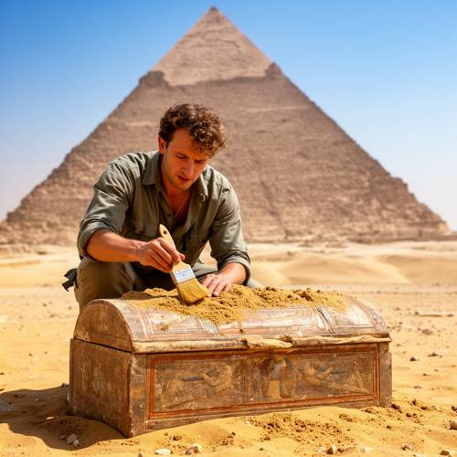
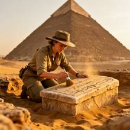
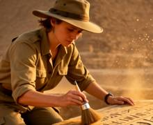

Grammar — Create a picture of an archaeologist brushing sand off a sarcophagus i
Create a picture of an archaeologist brushing sand off a sarcophagus in front of an Egyptian pyramid, looking focused.

Direct — one call, no iterationContinuum — Kimi K3 + FLUX.2-dev
Judge — Direct
PASSGrammar - Consistency — The man in the image is looking down at the object he is working on. His gaze is fixed on the brush and the sand, and his facial muscles appear tense, which is consistent with the expression of being 'focused'.
FAILAction - Contact Interaction — The image shows a man holding a brush and making contact with sand that is on top of an object. However, the object is a decorated chest, not a sarcophagus. Therefore, the action of 'brushing sand off a sarcophagus' is not accurately depicted.
FAILWorld Knowledge — The image contains a large, stone pyramid in the background, which is consistent with an Egyptian pyramid. However, the object in the foreground is a decorated chest with a curved lid, which does not match the typical appearance of an Egyptian sarcophagus (a stone coffin).
Judge — Continuum
PASSGrammar - Consistency — The person in the image is shown kneeling and leaning forward, with their head tilted down and their gaze directed at the sarcophagus lid they are working on. This posture and direction of gaze indicate that they are focused on their task.
PASSAction - Contact Interaction — The person, who appears to be an archaeologist, is holding a brush. The bristles of the brush are in contact with the surface of a stone sarcophagus, and particles of sand are shown in the air around the brush, indicating the action of brushing sand off the object.
PASSWorld Knowledge — The image includes a large, triangular structure in the background that is consistent with the appearance of an Egyptian pyramid. The object in the foreground is a rectangular stone box with carved inscriptions resembling hieroglyphics, which is a correct representation of a sarcophagus.
What the agent did
Thinking
Generate with flux2-dev, then inspect and iterate.
Step 1 — `generate_image`
{
"model": "flux2-dev",
"prompt": "An archaeologist kneeling at an archaeological dig site in front of a large ancient Egyptian pyramid, carefully brushing sand off a stone sarcophagus with a soft brush. She wears a khaki field shirt, wide-brimmed hat, and has a focused, intent expression. Golden desert sand, warm late-afternoon sunlight, hieroglyphics carved on the sarcophagus lid, dust motes in the air. Cinematic realistic photography, shallow depth of field, warm tones."
}
Result img_0

Thinking
The image looks quite good: archaeologist kneeling, brushing sand off a sarcophagus, pyramid in background, focused expression. Check details — her face is looking down focused, hieroglyphics look plausible. Maybe inspect the face/hands briefly. This looks good enough. Mark best and stop. Maybe inspect face region quickly.
Model
The first generation looks strong — let me check the fine details before finalizing.
Step 2 — `inspect_region`
{
"image": "img_0",
"padding": 60,
"roi": "the archaeologist's face and hands"
}
Result img_1

Thinking
Face looks focused, hands are fine, brush natural. Image is good. Mark best and stop.
Model
The details hold up well — a focused expression looking down at the work, natural hands holding the brush, and plausible hieroglyphic carvings. All requested elements are present and correct.
Step 3 — `mark_best`
{
"image": "img_0",
"reason": "All prompt elements present and correct: archaeologist brushing sand off a hieroglyph-carved sarcophagus, Egyptian pyramid behind, focused expression, warm desert light. Fine details (face, hands, brush) verified clean at full resolution."
}
Model
The image is complete and marked as the final result. It shows: - **An archaeologist** in khaki field clothes and a wide-brimmed hat, kneeling at a dig site - **Brushing sand off a sarcophagus** — a soft brush in hand, dust and sand visibly lifting off the carved stone lid with hieroglyphics - **An Egyptian pyramid** rising in the background under warm late-afternoon desert light - **A focused expression** — verified at full resolution, with natural hands and clean detail throughout No further edits were needed; the first generation matched the prompt on inspection.